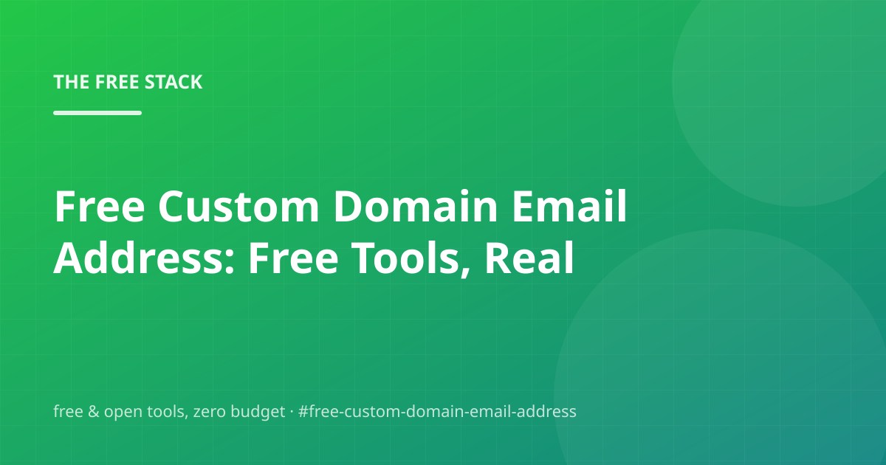

Free Custom Domain Email Address: Free Tools, Real Trade-offs

You don't need a budget to get good at free custom domain email address. You need a map of the free tools, and an honest read on the trade-offs between them. Here's that map — researched, written and fact-checked by the same engine that publishes this blog.
We'll walk through Is-a.dev Free Domains, Eu.org Free Subdomains, Automate the boring parts, and Measure before you optimize — and finish with the questions people actually ask, so you can check before you buy anything. You shouldn't have to buy anything.
Is-a.dev Free Domains
Skip the fluff and start here: is-a.dev gives you a real custom domain — username.is-a.dev — completely free, pointed at your GitHub Pages site.
So what does that look like when you're actually doing it? It is the fastest path from user.github.io/repo to a name that looks like an actual domain. You request the subdomain, add a CNAME record, and the platform handles the certificate. There is no invoice, ever.
For a personal project or side business, this covers you without breaking a sweat.
- Request yourhandle.is-a.dev in the is-a.dev app
- Add the provided CNAME record to your repo's Pages settings
- Wait a few minutes for propagation
Eu.org Free Subdomains
First, the thing that actually matters: eu.org has offered free subdomains to anyone for decades — the oldest free-domain project still around.
In practice that means: The catch is patience: the application is manual and approval can take days to weeks, and inactive domains get reclaimed. For projects that can wait, it is a genuinely free, transferable subdomain.
The links in the sources section go straight to the primary docs.
Automate the boring parts
The short version: Anything you do twice by hand should become a script. That's the entire discipline of free automation.
Which, in day-to-day terms, means: A cron expression, a webhook, or a scheduled workflow costs nothing to run and buys back an hour every week. Start with one small automation — a nightly backup, a feed check, a deploy on push — and add more only when the first one proves itself.
The links in the sources section go straight to the primary docs.
Measure before you optimize
Here's the part most people get wrong. You cannot improve what you do not measure, and the measurement tools here are all free.
In practice that means: Search console data, a simple counter in your build log, or raw access logs tell you which pages earn their keep. Ten minutes of reading that data is worth more than an hour of guessing, and none of it requires a paid analytics account.
The links in the sources section go straight to the primary docs.
Frequently asked questions
What would you do first if you only had one free afternoon?
Less than you'd think. eu.org has offered free subdomains to anyone for decades — the oldest free-domain project still around. Start there and only add pieces when you feel actual pain.
Can I keep this free forever, or is it a trial?
Mostly, yes. is-a.dev gives you a real custom domain — username.is-a.dev — completely free, pointed at your GitHub Pages site. Keyless public endpoints can get throttled if you hammer them, so batch your requests and cache what you fetch.
Is free custom domain email address actually free?
Mostly, yes. is-a.dev gives you a real custom domain — username.is-a.dev — completely free, pointed at your GitHub Pages site. The catch is usually scale or politeness: rate limits, bandwidth caps, or the fine print of the free tier.